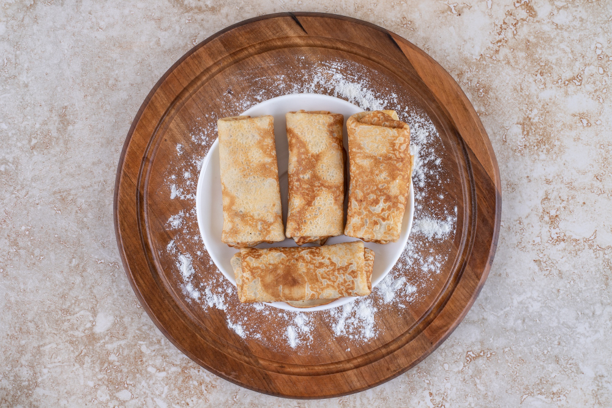

Palatschinke

Palatschinke are a widely spread dish throughout the Balkans. They can be sweet or salty. The former goes with sweet toppings, while the latter pairs well with some ham.
There is no fixed recipe for Palatschinke, so everyone may use a different one. Usually people eyeball the ingredients.
Ingredients
- Eggs
- Flour
- Milk
- Sugar
- Oil
Toppings
Steps
- Whisk the eggs until they become foamy and take more space.
- Slowly add flour, until the mixture starts rising on your mixer.
- Add milk, until it becomes fluid again.
- Add some more flour.
- Add some sugar to your taste, but not to much, otherwise it will burn and stick to the pan.
- If the palatschinke stcik to the pan add some oil to the mixtureand stir well.
- Put oil in the pan.
- Heat up the pan.
- Add mixture in the pan.
- Once the mixture is cooked on the top layer flip it with a fork.
- Repeat Step 7 to 10.
- Eat with some toppings.
Home